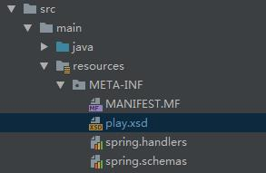

引言
从Spring2.0开始，Spring提供了XML Schema可扩展机制，用户可以自定义XML Schema文件，并自定义XML Bean解析器，并集成到Spring Ioc 容器中
在我们日常配置Spring的xml文件过程中，使用的标签都是spring定义好的，例如
实现自定义文档
大体就分为如下四个步骤
- 1.创建自定义的XML Schema文件(xsd)
- 2.自定义处理器(实现NamespaceHandler接口)
- 3.自定义解析器(实现BeanDefinitionParser接口，可实现多个)
- 4.注册到Spring的IOC中
1.创建自定义的XML Schema文件
在classpath资源路径下加入文件(play.xsd)：

文件内容如下
1 | <?xml version="1.0" encoding="UTF-8"?> |
定义了命名空间为http://zml1.github.io/play，包含元素ball，有name,type和size属性，use代表是否必填
2.自定义处理器NamespaceHandler
NamespaceHandler用于解析刚刚定义好的XML Schema文件。我们可以看到此接口包含三个方法
1 | public interface NamespaceHandler { |
Spring提供了一个默认的实现类NamespaceHandlerSupport,我们只需要在init的时候注册每个元素的解析器即可。
1 | public class BallNamespaceHandler extends NamespaceHandlerSupport { |
Spring在这里采用了设计模式中的委托模式，NamespaceHandlerSupport可以注册任意数量的BeanDefinitionParser(也就是BallParser)，而解析XML的工作委托给了BeanDefinitionParser(BallParser)负责。
3.自定义解析器BeanDefinitionParser
在BeanDefinitionParser被调用时，如果在NamespapceHandler中已有对应注册的parser(例如上面的BallParser)就解析相应的属性设置到Bean中。下面使用的是自定义解析bean，当然可以继承AbstractSingleBeanDefinitionParser类来简化解析过程。
1 | public class BallParser implements BeanDefinitionParser { |
4.注册到Spring(handler和schema)
在最开始我们看到在classpath资源路径下不仅有test.xsd,还有spring.handlers和spring.schemas这两个文件。这两个文件是为了让Spring在解析xml文件的时候能获取到咱们自定义的xsd。
- spring.handlers
spring.handlers文件包含了xml schema uri 和 Handler类的映射关系,在Spring的xml配置文件中出现http://zml1.github.io/play名空间的时候会交给BallNamespaceHandler来处理，key部分必须和xsd文件中的targetNamespace值保持一致,value是BallNamespaceHandler的包全路径
1 | http\://zml1.github.io/play=com.zml1.BallNamespaceHandler |
- spring.schemas
spring.schemas文件包含了xml schema xsd文件命名空间和文件路径的映射关系
1 | http\://zml1.github.io/schema/play.xsd=META-INF/play.xsd |
至此自定义xsd已完成,下面我们加入Spring的配置文件spring.xml中使用
1 | <?xml version="1.0" encoding="UTF-8"?> |
下面就可以通过@Autowires或context中获取bean使用咯。
1 | public class Main { |
输出结果：myname